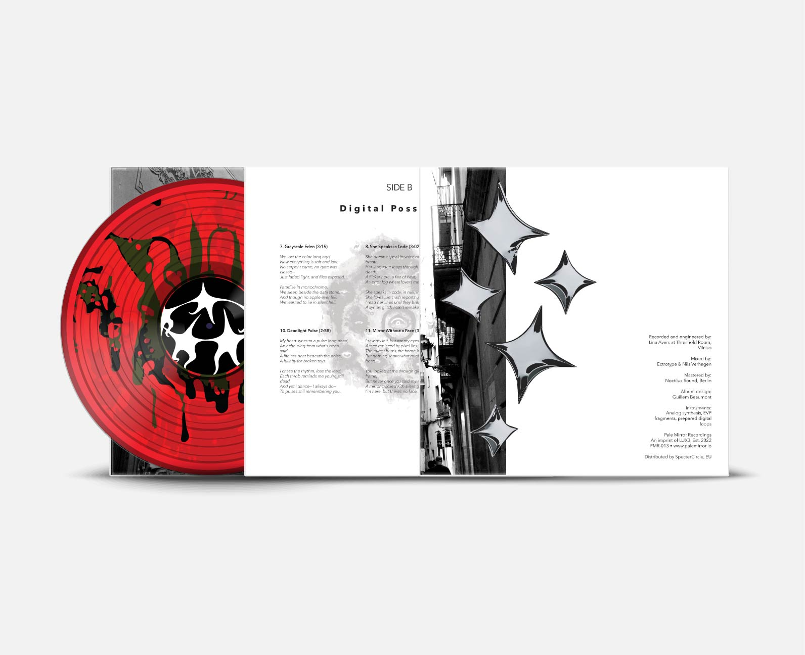

Proyectos
Mi trabajo se centra en la búsqueda de soluciones gráficas que sean estéticas y efectivas, siempre con atención al detalle y respeto por la identidad de cada proyecto.

Proyecto autoexperimental de diseño editorial enfocado en la creación de un CD musical ficticio.

Diseño de un folleto para La Página del Mural, una librería ficticia dedicada al arte urbano.

Packaging para BALLORA que comunica sostenibilidad y estética deportiva.
Proyecto editorial de vinilo musical ficticio con estética sublime.

Diseño editorial de una revista ficticia sobre inteligencia artificial.

Proyecto de señalética para el Parque Lo Morant, en Alicante.